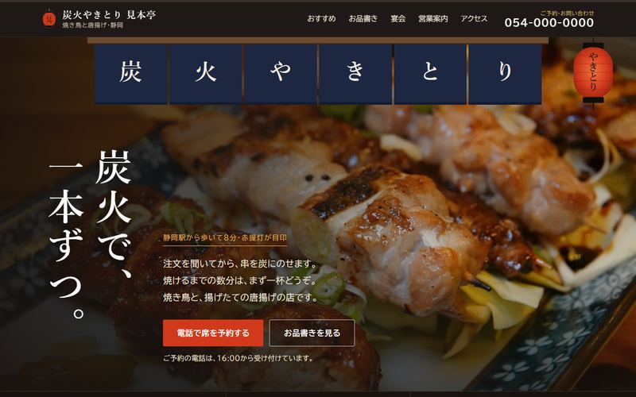
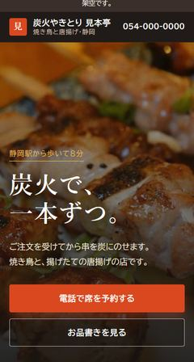
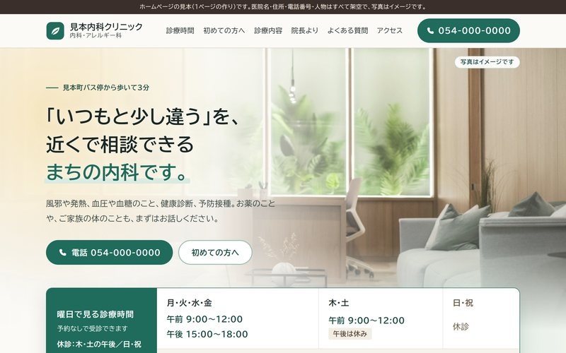
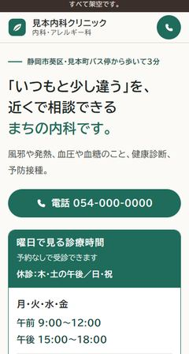
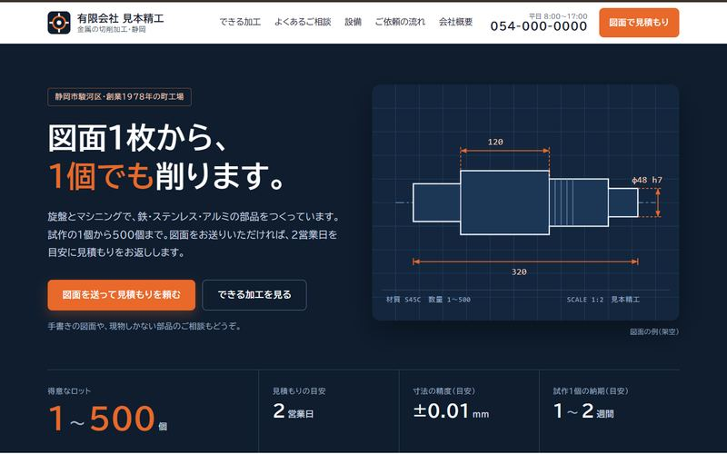
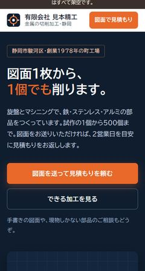

ラクワーク工房静岡
小さなお店・医院・工場を思い浮かべて作った、3つの見本です。
どれも架空のお店ですが、本物のお店のつもりで作り込んであります。スマホでも開いてみてください。






画面の幅に合わせて組み替わります。スマホでは、電話や地図のボタンが下に出ます。
こまめな更新が要る部品（プラグインなど）や、よそのサイトからの読み込みを使いません。乗っ取りの入口になる所が少ないページです。
お知らせや営業時間の書き換えは、ご連絡をいただければこちらで直します。
| 1ページのホームページ | 30,000円最初の3件は 20,000円（公開後に見本として紹介させていただくことが条件です） |
|---|---|
| 3〜5ページのホームページ | 60,000〜90,000円ページ数で見積もります |
| 書き換えの代行 | 月6,000円月2回まで。1か月ごとにやめられます |
ラクワーク工房の相楽 圭が、生成AIと一緒に作ります。静岡県に住んでいます。
メールには2営業日以内にお返事します。